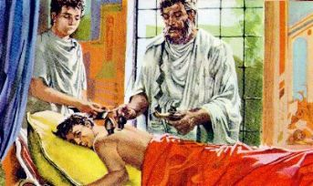
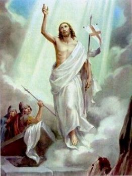
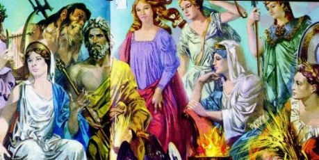

En le jour suivant,
Longinus ne s’est levé pas du lit dans le Camp des Soldats, pourquoi il avait
dormi mal, et il était 
Benka, la personne sage dans sciences qui aidait le Sanhedrin a été guidá à l'hébergement militaire pour le voir. Après avoir examiné lui, a recommandá qu'il ait été alimenté correctement et qu’il ait resté dans repos pour 4 jours.
Yossef, un ami qu’il avait fait dans Jérusalem, en sachant de ses difficultés, il a pris et a laissé lui dans chez sous le soin de sa famille, en proportionnant le confort et les ressources nécessaires pour son récupération.
Dans le moment en que Longinus a été transporté à la maison de Yossef, il était si malade, avec une fièvre telle haute, qu'il était dálirant. Il a été placé dans une pièce large avec une grande fenêtre où pénétrait beaucoup de lumière et la clarté exubérante du soleil. Mais il n'était pas dans les conditions pour aimer tout de ce confort, ni reconnaître les personnes pour échanger des impressions concernant le son propre santé.
Jours après, Benka a visité de nouveau pour suivre l'évolution de son cas, mais la fièvre encore a continué haute et le faisait transpirer et se mouvoir dans le lit. Quelquefois il se dáplaçait tant d'un côté à l'autre, comme s'il ait voulu se libérer de quelque force qui retenait lui dans le lit. Dans autres temps, il restait avec les yeux large-ouvert, mais sans voir ce qui se passait autour de lui.
Quand il s'est réveillé dans le jour suivant, il a senti une faiblesse terrible et l'habillement qu'il portait était complètement mouillé de transpiration. La famille de Yossef, toujours généreux et serviable, accompagnait les réactions de son organisme et cherchait de servir lui de la meilleure manière possible.
À cause de la fièvre, Longinus était avec un peu de vertige et les fois, il n'était pas capable de reconnaître les personnes qui affectueusement l’entouraient.
 En le troisième jour, il
a dácidá de se mettre à table pour faire la compagnie à tout dans la heure du
dájeuner, parce qu'il se sentait meilleur, il marchait très bien et ne réclamait
pas de quelque faiblesse.
En le troisième jour, il
a dácidá de se mettre à table pour faire la compagnie à tout dans la heure du
dájeuner, parce qu'il se sentait meilleur, il marchait très bien et ne réclamait
pas de quelque faiblesse.
Quand le repas a terminé, Yossef a prié en haute voix:
- Nous VOUS remercions, SEIGNEUR LE DIEU, pour la nourriture qui nous mangeons. Qu’il soit bon pour notre corps et stimule la fidálité de notre esprit.
Ce mot «esprit» a remué avec Longinus. Il croyait dans beaucoup dieux et espérait pour la protection de tous eux, toujours avec un objectif matériel, parce qu’il jamais avait imaginé que les personnes au delà de son corps, ils aient eu mais quelque chose!
Ainsi, en confiant dans l'amitié qui unissait eux et son dásir de satisfaire la propre curiosité, dans la première occasion qu'il était seul avec Yossef il a demandá à son ami:
- Yossef, aujourd'hui après le repas vous avez fait un remerciement au DIEU par son protection dans une manière que je ne savais pas. Je sais toujours que nous devons demander pour notre bien-être, pour conquête dáune guerre, pour gagner plus l'argent, et pour satisfaire tous nos besoins matériels. Mais demander pour le "esprit", comme que c'est-ce?
- C'est une longue histoire Longinus que j'ai appris lentement, pendant les années de ma vie, avec lectures, des comparaisons entre les textes sacrés, les enseignements de les docteurs de la Loi et avec grand effort personnel, en observant et dáduisant correctement les messages des prophètes. J'ai étudié le prophète Isaïe surtout, lis et ai médité sur ses visions de Juda et Jérusalem, dans le temps d'Uzziah, Jotham, Ahaz et Ezekiah qui ont été rois descendants de David.
- Comment est-ce que vous avez obtenu ces écrits?
- Quelques copies j'ai acheté, et les ceux qui manquaient, j'ai obtenu l'autorisation pour les copier des parchemins du Temple.
Yossef a continué:
- Dans le chapitre 7, vers 14 du Livre d'Isaïe, il fait une prophétie messianique qui a attiré mon attention:
"
C'est pourquoi le Seigneur lui-même vous donnera un signe. Voici, la jeune fille
deviendra enceinte, elle enfantera un fils, Et elle lui donnera le nom
d'Emmanuel". (Isaïe 7,14)
un fils, Et elle lui donnera le nom
d'Emmanuel". (Isaïe 7,14)
- C'est une prévision très important, parce qu'il révéle à nous que le Messie naîtra parmi nous vraiment, apportant le salut aux peuples, pardonnant notre beaucoup des péchés et laissant moyens pour sanctifier notre vie personnelle. Dans le chapitre 9, vers 7, Isaïe a écrit:
"Donner à l'empire de l'accroissement, Et une paix sans fin au trône de David et à son royaume, L'affermir et le soutenir par le droit et par la justice, Dès maintenant et à toujours: Voilà ce que fera le zéle de l'Éternel des armées". (Isaïe 9,7)
- Cela veut dire qu'il (LE PETIT GARÇON-DIEU) naîtra et grandira parmi nous, qu'IL sera le Prince de la Paix et formera un immense royaume d'amour et justice, partout, apportant la paix à tous les cÅ“urs qui reçoivent Le Message Divin. Évidemment, nous accepterons et seulement nous irons considárer cette réalité quand comprenons que nous ne pouvons pas servir aux deux côtés, au «bien» et au «mal». Nous avons qui savoir opter: ou nous servons le DIEU et cherchons notre salut, ou nous servons le pouvoir du «mal», les idoles, l’argent, et alors, nous allons affronter toutes les conséquences de notre dácision. Ici, je commence à répondre une partie de votre question: mais Sauver le que?
Naturellement, «sauver l'âme ou notre esprit», que c'est la même chose, parce que le corps rien mais il est qui le vêtement d'esprit. Quand nous mourons, le corps entre dans putréfaction et se change dans poussière. L'esprit reste vivant, il ne meurt pas. C'est l'esprit même qui rendrait ses comptes à DIEU pour tout que nous avons fait (nos actions), des bonnes et des males, au long de nos vies. De l'autre côté, le fait de nous essayons de vivre la Volonté de Dieu, résultera aussi en grand avantage à notre vie présente, en atteignant la sécurité et la paix d'esprit nécessaire aux jours de notre existence.
Dans le texte sacré, le prophète révéle toutes les indications que nous conduisent au CRÉATEUR, en affirmant que seulement le DIEU sauve, et IL sauvera tout les personnes qui entendent le SON appelé:
"Déclarez-le, et faites-les venir! Qu'ils prennent conseil les uns des autres! Qui a prédit ces choses dás le commencement, Et depuis longtemps les a annoncées? N'est-ce pas moi, l'Éternel? Il n'y a point d'autre DIEU que moi, Je suis le seul DIEU juste et qui sauve. Tournez-vous vers moi, et vous serez sauvés, Vous tous qui êtes aux extrémités de la terre! Car je suis DIEU, et il n'y en a point d'autre". (Isaïe 45,21-22).
- Avec ces indications et beaucoup de autres qui sont aussi importants, j’ai fait des comparaisons avec une série de faits surnaturels que se sont passé ici en Palestine pour trois années, a travers de JÉSUS DE NAZARETH. Je fais référence au grand nombre de cures extraordinaires et miracles notables : comme hommes aveugles qui récupèrent leurs visions, boiteux marchant avec normalité et même les morts qui ont été ressuscités. Choses incroyables, jamais vues dans aucun part du monde. Et avec toutes ces manifestations visible et incontestable, aussi ressortait le SON autorité et le pouvoir de SON Mot, à mesure que IL expliquait les Écrits Sacrés, dans une manière authentique et admirable, avec mots simples et directs qui pénétraient jusqu’à le fond du notre cÅ“ur.
- Mais de que manière, Yossef?
- Comme, je ne sais pas, mais je peux vous dire sincèrement que
dans mon intime, quelque chose toujours me faisait confidence, dans le
commencement timidement, mais depuis, quand j'ai eu l'occasion de le voir et
l'entendre personnellement, a confirmé dans mon cÅ“ur qui Cet Homme était
vraiment le Messie annoncé par le prophète Isaïe. Les faits se sont passé en
telle sorte que, la ressemblance ne pouvait pas être nié, surtout par moi, qui
étudiait ces textes sacrés, et j'ai eu très heureux de connaître beaucoup des
ces événements, et témoigner quelques-uns des faits incontestables.
faisait confidence, dans le
commencement timidement, mais depuis, quand j'ai eu l'occasion de le voir et
l'entendre personnellement, a confirmé dans mon cÅ“ur qui Cet Homme était
vraiment le Messie annoncé par le prophète Isaïe. Les faits se sont passé en
telle sorte que, la ressemblance ne pouvait pas être nié, surtout par moi, qui
étudiait ces textes sacrés, et j'ai eu très heureux de connaître beaucoup des
ces événements, et témoigner quelques-uns des faits incontestables.
Les Juifs ont tué JÉSUS, un Homme innocent et un Saint Prophète; il a été la victime d'une intrigue mauvaise née dans le Sanhedrin, probablement conduit par le Haut Prêtre Caiaphas qui était conspire avec les autres prêtres, scribes, pharisiens et quelques très âgé du peuple. J’imagine que la principale raison a été la jalousie. Ils ne réussissaient pas à surpasser les arguments irréfutables rempli de logique que le Rabbin de Nazareth exposait, et ils ne voulaient pas aussi, même voyant, croire et témoigner les miracles qu'IL faisait dans bénéfice des peuples qui avec perséverance et insistance, pleins de foi, cherchaient LUI. Pour cette raison, ils ont tué JÉSUS.
Je ne suis allé pas au Calvaire pour témoigner la crucifixion, parce que j’étais très troublé et beaucoup de triste avec tout que j'ai vu. Je suis revenu pour maison, l’émotion me coupa la voix et mon cÅ“ur était chagriné, avant de tant grand lâcheté, sordidité et ingratitude.
- Quand est-ce qu'il s'est passé, Yossef?
- C'est passé dans le dernier vendredi, et je peux affirmer avec toute la conviction que «Ce Homme» était de fait le «FILS DE DIEU».
- Mais qui vous fait se sentir si sûr, mon ami?
- Longinus, j'ai eu l'occasion de le connaître personnellement... IL était un HOMME admirable... Grand, avec la peau brélée par le soleil, les cheveux étaient marron sombres et longues jusqu'à SON épaule, la barbe c’était épais, que composaient un visage attrayant et agréable. IL avait un coup d'oeil calme et pénétrant qu’irradiait confiance et inspirait la paix.
Il y a deux années, Rebecca, ma fille plus vieille, en ayant aidá ma femme avec les tâches de la maison, elle a monté au terrasse pour réparer quelques fuites, quand, dans un moment de négligence, elle a glissé du toit et est tombée violemment avec sa dos dans la terre. Le résultat a été une paralysie du côté droit entier qui a laissé profondáment prosterné, sans intérêt dans la vie. Elle ne s’alimentait pas correctement et pour cela, il a été en tombant en dácadence dans la direction à la mort. Il a une année passé, dans la Pâque de l'année dernière, je revenais de travail, quand j'ai vu JÉSUS d'une certaine distance, qui marchait pour notre rue et IL était suivi par un grand nombre de personnes.
J'ai couru chez moi, j’ai pris Rebecca dans mes bras, et j'ai marché avec dátermination et foi dans la direction de LUI, pourquoi j’étais assuré que s’IL ait voulu, IL pouvait guérir ma fille.
JÉSUS me en voyant a ralenti SES pas jusqu'à qu'IL s’a arrété.
Mes jambes ont tremblé et m’ont empêché de marcher au rencontre de LUI. J'étais
essoufflé, ma respiration était irrégulière et mon cÅ“ur a battu lourdement. IL à
peine m'a regardá et a souri... Oh! Longinus, qui grand plaisir, un torrent
copieux dáamour et de tendresse sont sortis de ce coup d'oeil et de cette
souris! J'ai senti comme si une puissante vague de chaleur ait envahi ma
poitrine et m'ait environné e m’ait chauffé, laissant un précieux confort dans
mon cœur.
marcher au rencontre de LUI. J'étais
essoufflé, ma respiration était irrégulière et mon cÅ“ur a battu lourdement. IL à
peine m'a regardá et a souri... Oh! Longinus, qui grand plaisir, un torrent
copieux dáamour et de tendresse sont sortis de ce coup d'oeil et de cette
souris! J'ai senti comme si une puissante vague de chaleur ait envahi ma
poitrine et m'ait environné e m’ait chauffé, laissant un précieux confort dans
mon cœur.
Avec un visage serein IL a regardá Rebecca, et très doucement IL a ouvert LEURS bras et avec un geste paternel, même sans parler, voulait dire: "Vienne ici, fille".
Elle, rapidement se a dátaché de mes bras, comme se n'ait eu pas aucun malade, et a couru à LUI et l’a embrassé avec affection et très tendrement. Je ne ai pu pas résister, mon cher ami, a été une émotion très forte témoigner le guérit de ma propre fille seulement à travers de un sourire de JÉSUS. (Luc 18,15-16)
J’ai pleuré longuement larmes dáémotion et joie. Je ne savais pas le que faire, ni le que dire, pour cette raison j'ai pleuré, des larmes sincères qu’exprimaient la ma plus profonde gratitude.
En tenant dans la main de ma fille, IL a marché à où j'étais et, IL a placé SON main sur mon épaule et IL a dit:
- " Restes dans paix, votre fille est guéri ".
Et IL a continué son marche accompagné par la foule, pendant que je, rempli de grande allégresse et émotion, je observais avec mes yeux pleins de larmes SES pas rapides que suivait devant pour consoler d'autres cÅ“urs blessés dans le chemin de la vie.
Longinus entendait silencieusement et était tant de admiré que pour un moment il n'a réussi pas de articuler quelque mot. Il n'avait jamais entendu une narration si jolie et touchante.
Après un certain temps il a parlé:
- Mon ami, sans doute, vous avez passé une fabuleuse expérience. Il n'y a pas mots que puissent dámontrer, honnêtement, la grandeur des «verités» que vous me révélez. J'ai appris beaucoup dans cet espace de temps que nous avons été ensemble. Merci!
À ce temps, c’est arrivé Lisias qu'était un ami et il est venu le visiter. Yossef qui aussitôt a perçu qu'il voulait le confier quelque chose, l'a mené à une pièce.
Lisias a dit:
- La ville est remplie de rumeurs. Une rumeur c’été répandu dás
ce matin tôt laissant tout les gens secouées. Ils 
- Loué soit Le SEIGNEUR DIEU. Alors, JÉSUS DE NAZARETH est le vrai Messie !... C'est une nouvelle formidable, Lisias! J'étais sûr de ce et vous savez les raisons, mais maintenant, avec la Résurrection de NOTRE SEIGNEUR confirme toutes les prophéties, en obligeant les incrédules et ce de petite foi, examiner nouvellement leurs convictions et conduites. Viens! Je veux le présenter à un ami. Je suis sûr qu'il aimera aussi entendre ces nouvelles.
Après dáêtre présenté à Longinus, Lisias en étant attentif à la sollicitation de Yossef, a parlé tout que il savait sur la rumeur de la Résurrection JESUS.
- IL avait parlé qu'après SON mort, IL ressusciterait dans le troisième jour.
Le plus Haut Prêtre Joseph Ben Caiaphas et son beau-père Ananiah, qui étaient impliqués dans la même intrigue, ont ordonné à trois soldats du Temple pour fixer avec ciment la pierre que fermait l'entrée à la tombe où IL a été enterré, et alors ils ont monté garde pour éviter que SES élèves soient allés là et l'aient retiré, et depuis, plus tard aient affirmé qu'IL avait ressuscité.
Cependant, dans l’aurore de aujourd'hui, le troisième jour après SON enterrement, la pierre du sépulcre a roulé elle-même bruyamment, en le même temps que un fort éclair a paru, et une force invisible a jeté les gardes contre le sol et les met obstacle à voir ce que s'était passé, pendant que JÉSUS magnifique, enveloppé par une auréole très brillant, revenait à le Ciel.
Après passé aucuns moments, les gardes se sont levés et sont allés à la rencontre les prêtres pour dire le que a advenu.
Les Saints Femmes qui sont allés au sépulcre par le matin pour oindre le Corps du SEIGNEUR, pourquoi ce providence ne a été pas fait dans le vendredi dá à manque de temps, elles ont trouvé la tombe vide, et quand elles revenaient à la ville elles ont vu JÉSUS vivant! IL avait ressuscité et était resplendissant, avec le Visage recomposé et SES blessures étaient cicatrisées. (Jo 20,1-20)
Et pour cette raison, elles étaient remplis d'enthousiasme et de émotion, en voulant dácrire avec beaucoup des dátails la grandeur de l'événement et parlaient avec tant de fermeté et de conviction qui ont laissé les élèves admirées et aphone. Les femmes ont complété le relate disant qu'IL voulait rencontrer avec tout d'eux dans le Galilée.

Longinus était touché et rempli dáémotion... Finalement il a souri soulagé après un certain temps. Il était comme se aient eu enlevé une charge de responsabilité très lourde dáen haut ses épaules, et ainsi, avec plus tranquillité intérieur, il voulait savoir plus de dátails du événement. Pour cela il a fait beaucoup des questions à ses compagnons.